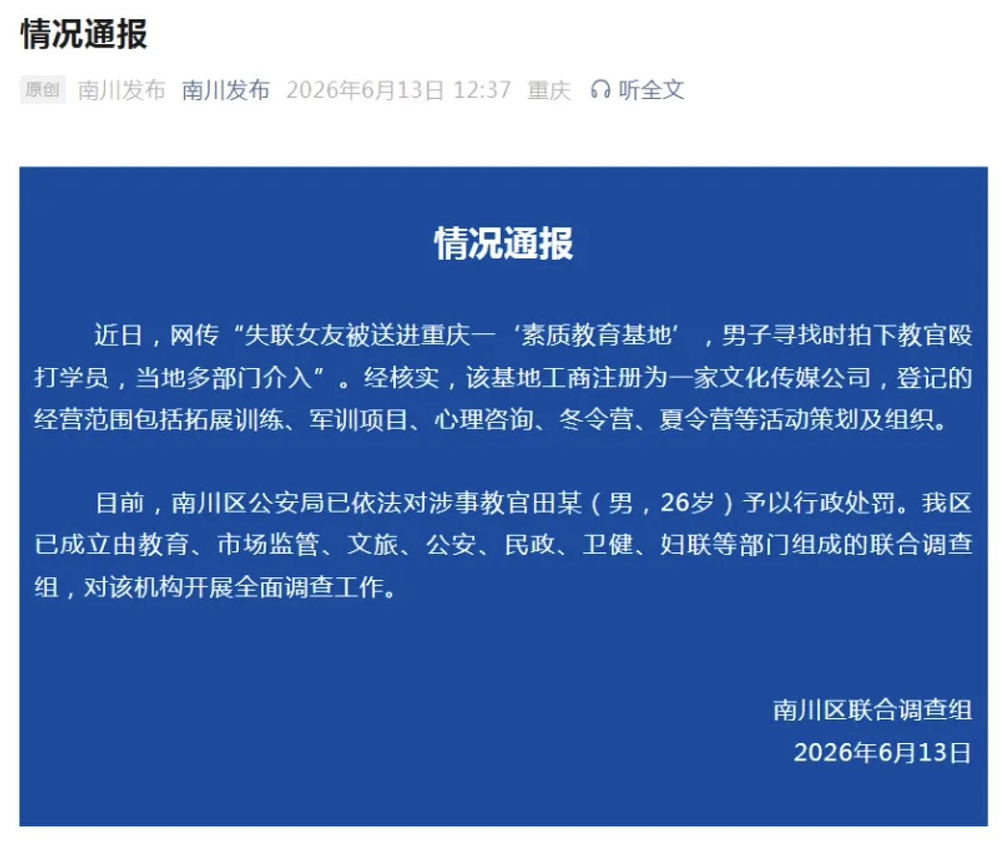
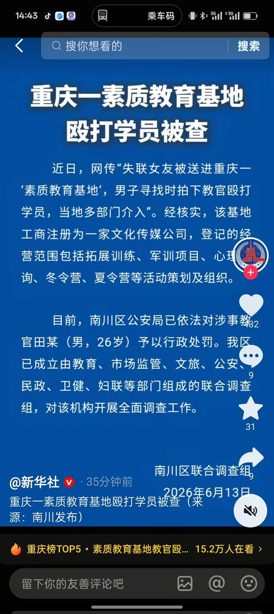

@LwrDHYyuxR22499 ✋🏻😭🤚🏻这下更是看见影响大了




重庆一男子发现失联女友被送进当地一“素质教育基地”，并拍到学员被殴打画面。
重庆“南川发布”6月13日发布情况通报称，当地多部门介入。经核实，该基地工商注册为一家文化传媒公司，登记的经营范围包括拓展训练、军训项目、心理咨询、冬令营、夏令营等活动策划及组织。 https://t.co/tNyGOL7Npu
重庆“南川发布”6月13日发布情况通报称，当地多部门介入。经核实，该基地工商注册为一家文化传媒公司，登记的经营范围包括拓展训练、军训项目、心理咨询、冬令营、夏令营等活动策划及组织。 https://t.co/tNyGOL7Npu
该起特训机构虐待学员事件经新华社跟进报道，
舆论关注度持续走高。
涉事教官因故意伤害等违法行为，已经被司法机关作出行政处罚处罚
距离关停校区近在咫尺…
😼😼😼
过几天各位就能看见成片的校区倒闭了
下附文章链接: https://t.co/uhyPMepJv4 12/18 :5pm E@u.sr Cuf:/ https://t.co/markMVcFLW https://t.co/CbUknGUT09
舆论关注度持续走高。
涉事教官因故意伤害等违法行为，已经被司法机关作出行政处罚处罚
距离关停校区近在咫尺…
😼😼😼
过几天各位就能看见成片的校区倒闭了
下附文章链接: https://t.co/uhyPMepJv4 12/18 :5pm E@u.sr Cuf:/ https://t.co/markMVcFLW https://t.co/CbUknGUT09